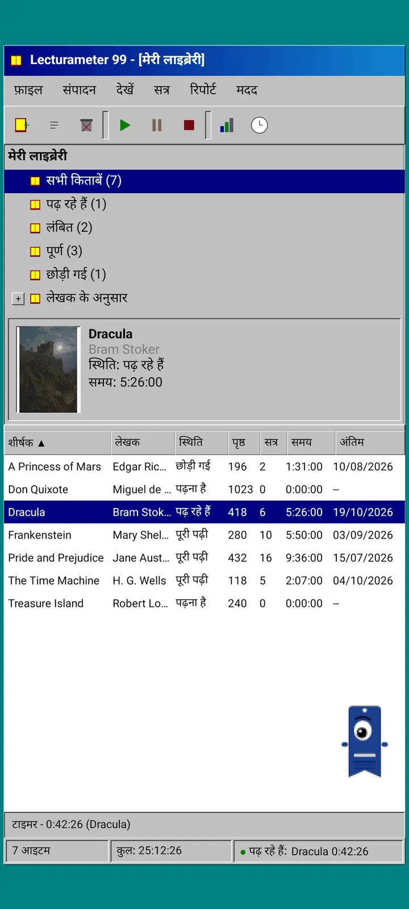
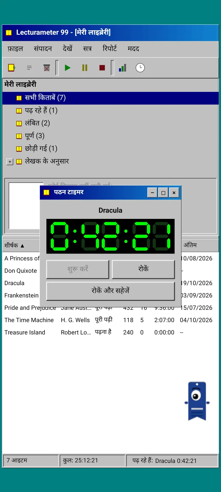
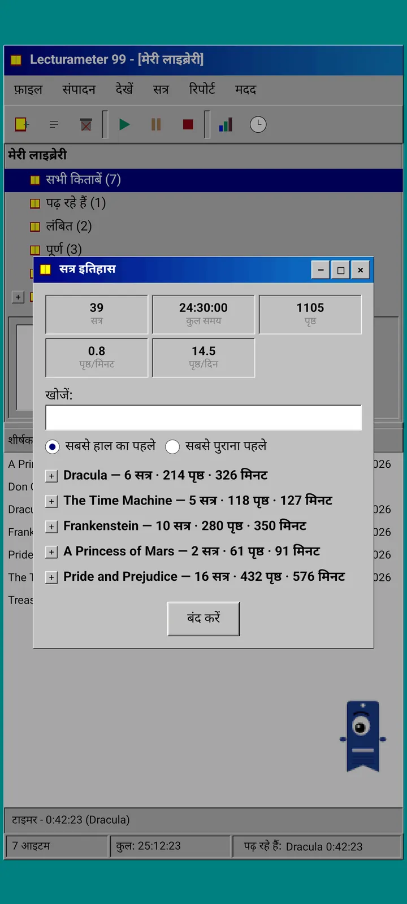
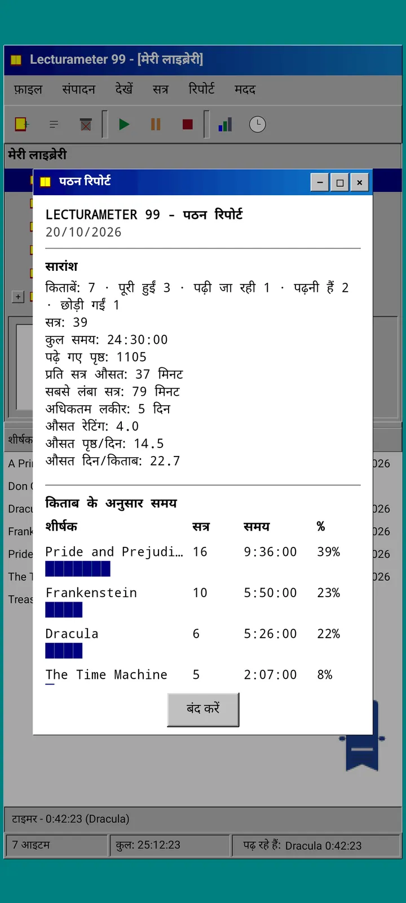

ब्लॉग · 2026-09-24
Lecturameter 1999: अगर Lecturameter किसी पुराने PC प्रोग्राम जैसा दिखता तो कैसा होता?
Lecturameter का एक वैकल्पिक क्लाइंट, जिसमें विंडो, मेन्यू, टेबल और LCD टाइमर हैं, और जो आपके असली बैकअप खोलता है। यह कैसे बना, इसमें क्या है और जानबूझकर क्या छोड़ा गया है। जल्द ही Play Store और App Store पर मुफ़्त आ रहा है।
Lecturameter 1999 कुछ महीनों से तैयार हो रहा है। मैंने इसे टुकड़ों में, यहाँ-वहाँ, बिना जल्दबाज़ी और बिना किसी योजना के बनाया है। मैंने इसे गंभीरता से तब लिया जब मैंने देखा कि iOS संस्करण मेरी उम्मीद से सरल था और मेरे पास इसे पूरा करने की गुंजाइश बची थी।
यह अकेला प्रयोग नहीं है। Lecturameter की दुनिया के और भी प्रोजेक्ट मेरे मन में हैं, कुछ काफ़ी आगे बढ़े हुए और कुछ बस शुरू ही हुए हैं। इनमें से ज़्यादातर शायद कभी सामने नहीं आएँगे।
यह कहाँ से आया?
सब कुछ एक ऐसे प्रयोग से शुरू हुआ जिसके चारों ओर मैं काफ़ी समय से घूम रहा था।
विचार यह था कि Lecturameter को शुरू से कई बार दोबारा बनाया जाए, बिल्कुल अलग डिज़ाइन सिद्धांतों के साथ। असली ऐप को छुए बिना और उसकी जगह लेने का कोई इरादा रखे बिना। सात संस्करण बने। एक 2016 के किसी Android ऐप की नकल करता था, दूसरा कल्पना करता था कि 2036 में यह कैसा दिखेगा, एक ने लाइब्रेरी को किताबों की अलमारी बना दिया जिसमें जैसे-जैसे आप पढ़ते हैं, किताबों की जिल्द मोटी होती जाती है, और एक को दो स्क्रीन वाले हैंडहेल्ड कंसोल के लिए डिज़ाइन किया गया था।
मुझे सबसे ज़्यादा 1999 पसंद आया। नब्बे के दशक के आख़िर का एक डेस्कटॉप प्रोग्राम: घना, काम की चीज़, सब कुछ विंडो, मेन्यू और टेबल में। मैंने तय किया कि इसे मज़े के लिए धीरे-धीरे पूरा करूँगा और इसे एक पूरा क्लाइंट बना दूँगा, जिसके नीचे असली Lecturameter डेटा होगा।
यह क्या है?
Lecturameter 1999 एक स्वतंत्र ऐप है, जो Lecturameter से अलग है। इसे खोलने पर आपको हरे-नीले (टील) रंग के डेस्कटॉप पर एक बड़ी की हुई विंडो दिखती है। ऊपर टाइटल बार और मेन्यू: फ़ाइल, संपादन, देखें, सत्र, रिपोर्ट और सहायता। उसके नीचे पिक्सेल वाले आइकनों की एक टूलबार। बीच का हिस्सा दो भागों में बँटा है: एक ओर लाइब्रेरी का ट्री और कवर वाला प्रिव्यू पैनल, और दूसरी ओर हर किताब के लिए एक पंक्ति वाली टेबल। सबसे नीचे स्टेटस बार है, जिसमें आइटम की संख्या, कुल समय और वह किताब दिखती है जो आप पढ़ रहे हैं।



Lecturameter जैसा ही डेटा
यही वह हिस्सा है जो इस प्रयोग को काम की चीज़ बनाता है। 1999 वाले खोल के नीचे असली Lecturameter डेटा मॉडल है, जस का तस: वही किताबें, वही सत्र, वही स्थितियाँ, रेटिंग और नोट्स। यह जो बैकअप एक्सपोर्ट करता है वह वही फ़ाइल है जो Lecturameter एक्सपोर्ट करता है, और वही फ़ाइल यह इम्पोर्ट भी करता है।
व्यवहार में इसका मतलब है कि आप फ़ाइल में जाकर अपना बैकअप इम्पोर्ट कर सकते हैं और अपनी पूरी लाइब्रेरी 1999 की टेबल में देख सकते हैं। एक हफ़्ते तक LCD टाइमर के साथ पढ़िए। एक्सपोर्ट कीजिए। नए सत्रों के साथ आधुनिक ऐप में लौट जाइए, और रास्ते में एक भी फ़ील्ड खोए बिना। Goodreads CSV भी अंदर और बाहर दोनों तरफ़ जाता है।
किताब की खोज Lecturameter जैसी ही है: यह ऐप के अपने कैटलॉग और Google Books से पूछती है, और शीर्षक, लेखक, पृष्ठ, ISBN और कवर भर देती है। कवर को पोस्टराइज़ करके बिना स्मूदिंग के बनाया जाता है ताकि वह उस ज़माने के GIF जैसा दिखे।
सत्र, इतिहास और रिपोर्ट
पढ़ने का तरीका Lecturameter वाला ही है, बस विंडो में ढला हुआ। आप टेबल में एक किताब चुनते हैं और प्ले बटन दबाते हैं। टाइमर विंडो खुलती है, जिसमें काले पर हरे रंग का सात-सेगमेंट डिस्प्ले होता है। आप इसे खिसका सकते हैं, टास्कबार में छोटा कर सकते हैं या बंद कर सकते हैं: समय स्टेटस बार में गिनता रहता है।
स्टॉप दबाने पर सत्र सहेजने का डायलॉग खुलता है: तारीख़, मिनट, पहला और आख़िरी पृष्ठ, टिप्पणी। जैसे-जैसे आप टाइप करते हैं, सारांश पृष्ठ और गति निकालता जाता है। अगर आप किताब के आख़िरी पृष्ठ तक पहुँच जाते हैं, तो वह पूछता है कि क्या आपने इसे पूरा कर लिया। मैन्युअल सत्र सत्र मेन्यू से जोड़े जाते हैं।
इतिहास सत्रों को किताब के हिसाब से प्लस और माइनस वाले ट्री में समूहित करता है, और ऊपर पाँच आँकड़े दिखाता है: सत्र, कुल समय, पृष्ठ, प्रति मिनट पृष्ठ और प्रति दिन पृष्ठ। किसी सत्र को संपादित करने के लिए उस पर दो बार टैप करें, हटाने के लिए देर तक दबाएँ।
आँकड़े मोनोस्पेस टेक्स्ट में एक पढ़ने की रिपोर्ट हैं, मानो प्रिंटर से निकली हो: सबसे लंबी स्ट्रीक और औसत रेटिंग वाला सारांश, ब्लॉक बार के साथ हर किताब पर लगा समय, प्रति दिन पृष्ठों में गति, हर दिन पढ़े गए पृष्ठों के अनुसार अक्षरों से बना साल का कैलेंडर, और पिछले सात दिन।



Pagi 99
Pagi भी 1999 की यात्रा करता है। यह वही एक आँख वाली बुकमार्क की छाया है, पर पिक्सेल वाली, और उस दौर के ऑफ़िस असिस्टेंट की तरह स्क्रीन पर खुला घूमता है। आप इसे उँगली से खींच सकते हैं, टैप करने पर यह एक छोटी बात कहता है और आप जो कर रहे हैं उसके हिसाब से इसके भाव बदलते हैं: किताब खोजते समय यह सोचता है, टाइमर चलते समय पढ़ता है और सत्र सहेजने या किताब पूरी करने पर जश्न मनाता है।
ऐप की टिप्स पीले गुब्बारों में Pagi से जुड़ी दिखती हैं, हर एक बस एक बार। अगर आप उन्हें दोबारा देखना चाहें, तो वे सहायता में, आज की टिप में मिलेंगी।



क्या बाहर रखा गया
Lecturameter 1999 जानबूझकर ज़्यादा सरल है। यह एक प्रयोग है और, सिद्धांत रूप में, रिलीज़ के बाद इसका और विकास नहीं होगा। नई सुविधाएँ Lecturameter में आती रहेंगी।
इसे बनाते समय मैंने तय किया कि जो भी चीज़ पढ़ने के तरीके पर असर नहीं डालती, वह बाहर रहेगी। इसीलिए Lecturameter 1999 में Pro नहीं है। जो आप देखते हैं, वही आपको मिलता है।
Lecturameter 1999 उन सभी भाषाओं में आएगा जिन्हें Lecturameter सपोर्ट करता है।
कब?
यह iOS के लिए Lecturameter और संस्करण 3.7 आने के बाद Play Store और App Store पर मुफ़्त आएगा। यह तैयार है और मेरे फ़ोन पर चल रहा है। प्रकाशित करने से पहले मेरी असली लाइब्रेरी के साथ टेस्टिंग और आख़िरी बारीकियाँ बाकी हैं। जब यह उपलब्ध होगा, तो मैं इसकी घोषणा यहाँ, X पर और Reddit पर करूँगा।
इस बीच, Lecturameter अब भी Lecturameter है, अपनी थीम, अपनी चुनौतियों और अपने Bingo के साथ। 1999 संस्करण उसी डेटा को देखने का एक और तरीका है।
इंतज़ार के दौरान, Android पर Lecturameter
आगे पढ़ें: Lecturameter 1999 · पढ़ने का समय या पृष्ठ · पढ़ने का टाइमर